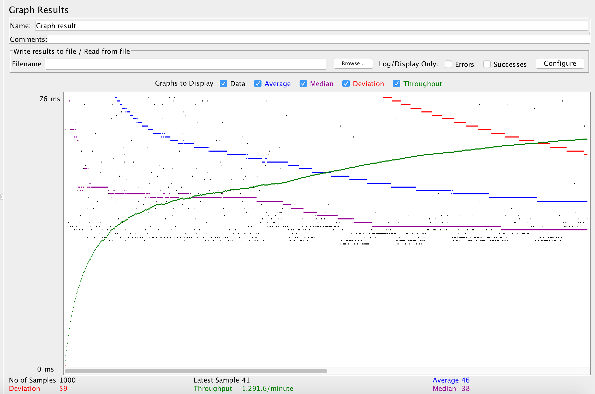
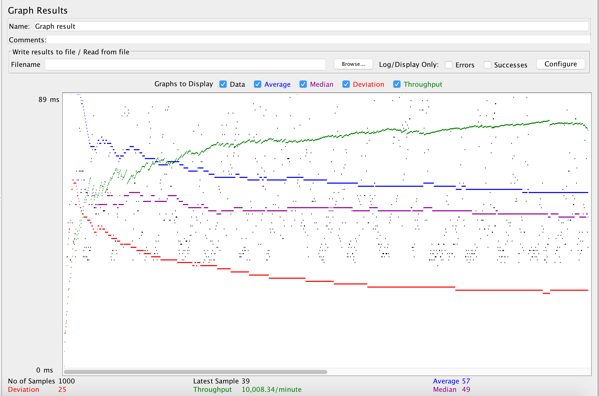
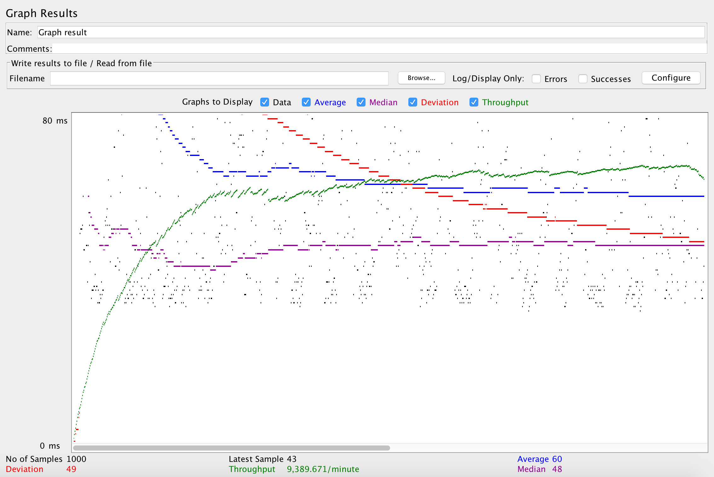
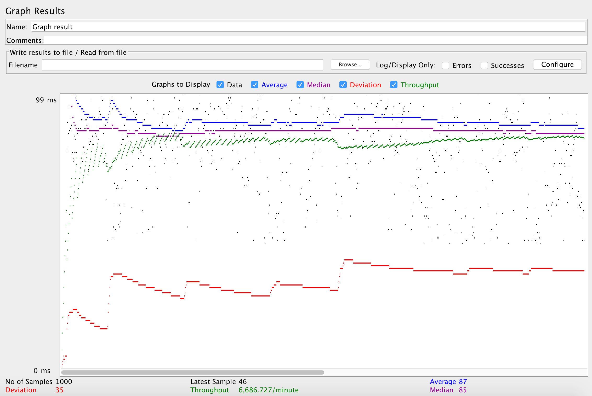
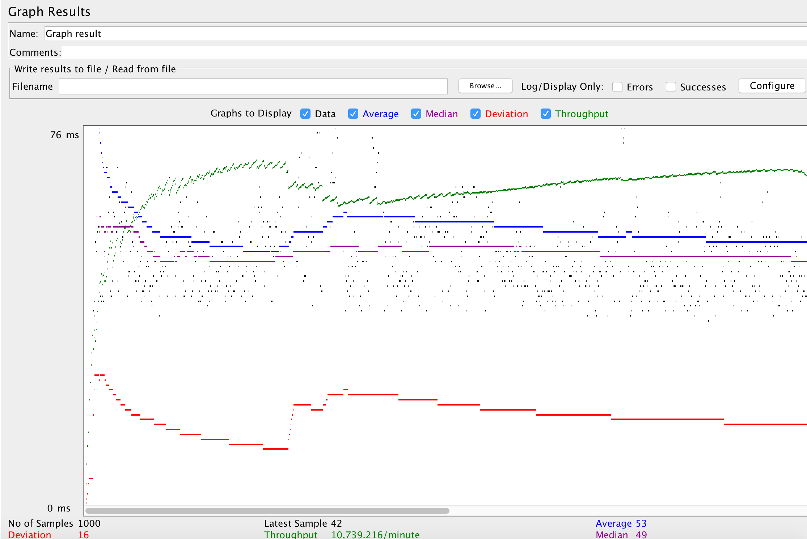
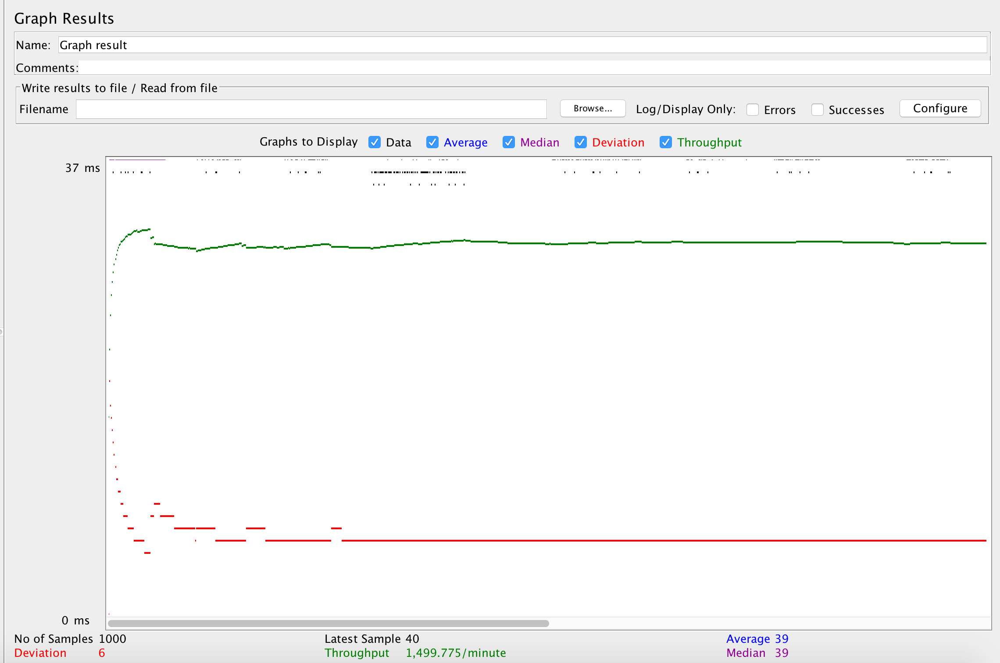
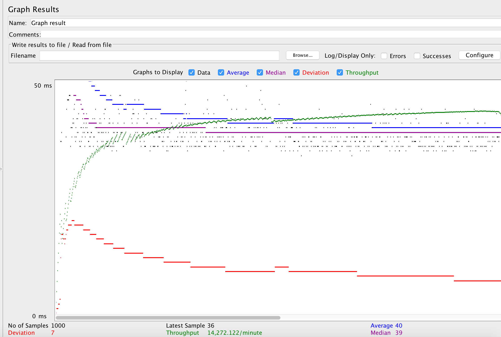
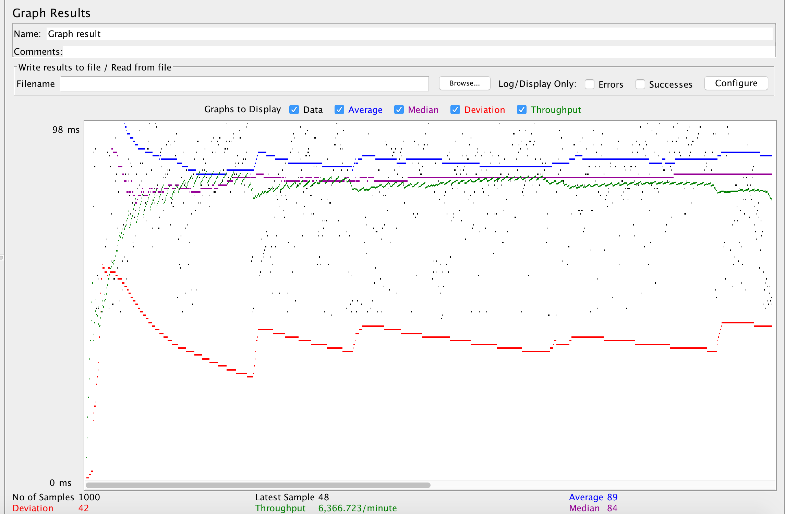
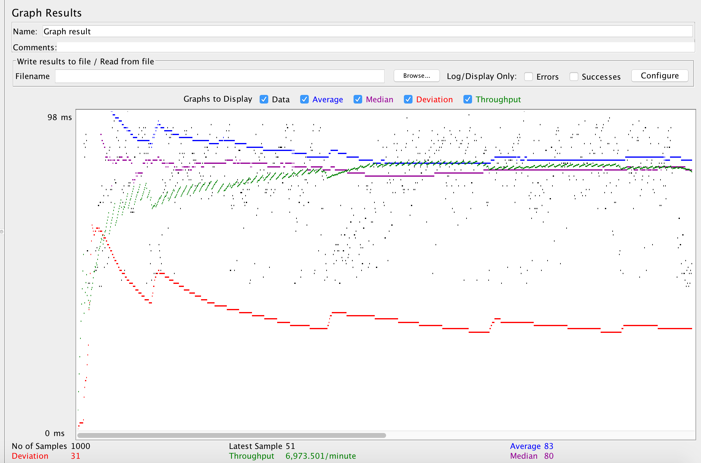

| Single-instance version cases | Graph Results Screenshot | Average Query Time(ms) | Average Search Servlet Time(ms) | Average JDBC Time(ms) | Analysis |
| Case 1: HTTP/1 thread |  | 50 | 1.7547 | 1.077 | This is the base run and we compare others to this. |
| Case 2: HTTP/10 threads |  | 78 | 3.6521 | 2.7591 | This is running 10 thread vs 1 thread for case 1, so the times are higher as we are running more searches concurrently |
| Case 3: HTTPS/10 threads |  | 81 | 3.9344 | 2.8940 | This one uses HTTPS, and because of https overhead this one is slightly slower that case 2. |
| Case 4: HTTP/10 threads/No prepared statements |  | 98 | 3.568 | 2.711 | This one does not use prepared statemnets, theoretically this should be slower than case 2 but in our case this is faster a little bit. It seems prepared statement does not provide a huge change and the fastness could be due to chance. |
| Case 5: HTTP/10 threads/No connection pooling |  | 201 | 115.6549 | 113.8147 | This one does not use connection pooling and therefore is slower than all others. It seems having connection pooling helps much better than only having prepared statement. |
| Scaled version cases | Graph Results Screenshot | Average Query Time(ms) | Average Search Servlet Time(ms) | Average JDBC Time(ms) | Analysis |
| Case 1: HTTP/1 thread |  | 53 | 1.9765 | 1.0463 | This is the scaled version of case 1, and as we expected the results are faster than case 1 in single instances. Altough this is not becuase of load balancing. This case is one thread in jmeter so the difference is due to chance because we will have one session and all requests will go to either master or either slave in this case. |
| Case 2: HTTP/10 threads |  | 69 | 2.4599 | 2.2061 | As we expected this one is faster that case 2 in singles instances and this is because of load balancing. We are running 10 threads this time so load balancing can help us. |
| Case 3: HTTP/10 threads/No prepared statements |  | 80 | 2.0551 | 1.3017 | Also in this we are faster than equivalant case (case 4) in single instances and this is due to load balancing. |
| Case 4: HTTP/10 threads/No connection pooling |  | 190 | 104.9355 | 104.1383 | This one is faster than its equavalent case in singles (case 5) and its because of load balancing. |